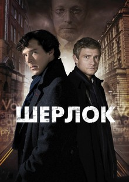

Гра престолів
Дії серіалу відбуваються на тлі політичних інтриг та боротьби за владу. Король Семи Королівств, Роберт Баратіон, просить свого друга Еддарда Старка стати десницею короля - головним його радником. Він погоджується на цю посаду і підозрює, що його попередника було вбито.Фентезі
2011
Доктор Хаус
Серіал Доктор Хаус розповідає нам про команду лікарів, які мають поставити правильний діагноз пацієнтові та врятувати йому життя. Сам серіал за жанром є медичним детективом з елементами драми.Драма
2004

Шерлок
Знаменитий детектив з Бейкер Стріт не любить сидіти, склавши руки. Допомагає Шерлоку Холмсу вірний товариш, лікар за освітою та письменник за покликанням – Ватсон. Водночас ця парочка розкриває гучні злочини, підтримуючи спокійне життя у Лондоні.Детектив
2010
Сверхъестественное
Це історія про двох братів Сема і Діна, які подорожують на своєму чорному автомобілі Chevrolet Impala США розслідуючи різні паранормальні явища і борючись з породженням зла, такими як примари або демони.Драма
2005